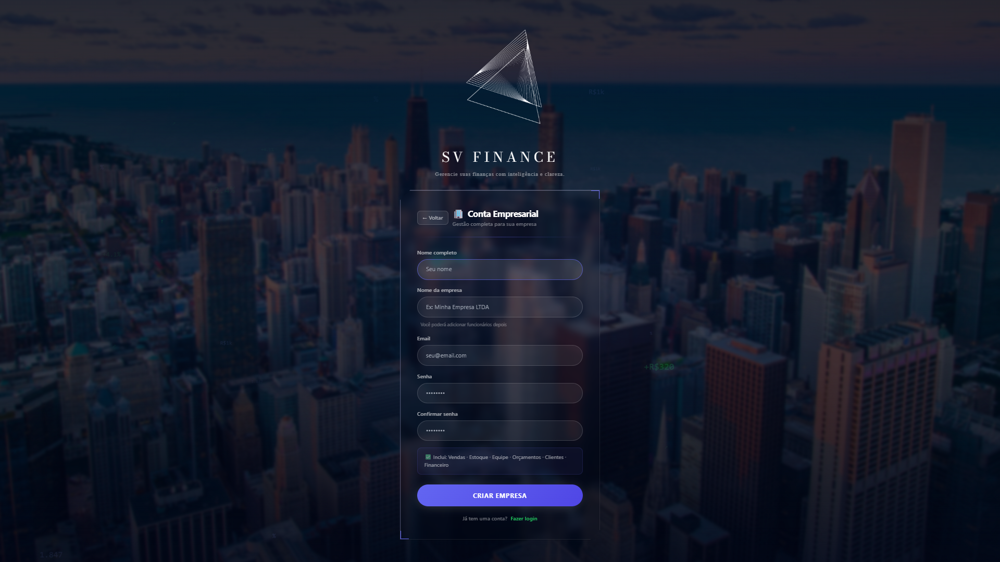

Guia completo para usar todos os módulos do sistema de gestão financeira SV Finance. Do cadastro inicial aos relatórios avançados.
Acesse app.svfinance.com.br e siga o processo de cadastro:
- Escolha o tipo de conta
Selecione entre Uso Pessoal (controle financeiro individual) ou Uso Empresarial (gestão completa com equipe).
- Selecione seu segmento
Escolha o tipo de negócio: Contador, Barbeiro/Salão, Mototaxi, Designer de Unhas, Restaurante, Loja ou Genérico.
- Preencha seus dados
Nome completo, nome da empresa (PJ), email e senha de no mínimo 6 caracteres.
- Verifique seu email
Acesse sua caixa de entrada e clique no link de confirmação enviado pelo SV Finance.
- Faça login e comece
Com a conta verificada, acesse o sistema e será direcionado ao Dashboard.

Acesse com seu email e senha. Caso esqueça a senha, clique em "Esqueceu a senha?" na tela de login e siga as instruções enviadas por email.

O Dashboard é a tela principal do sistema. Apresenta um resumo financeiro em tempo real com os principais indicadores do seu negócio.

O que você encontra no Dashboard
| Elemento | Descrição |
|---|---|
| Saldo atual | Saldo consolidado de entradas menos saídas |
| A receber | Total de contas a receber em aberto |
| A pagar | Total de contas a pagar em aberto |
| Gráfico de evolução | Linha temporal do saldo ao longo do período |
| Entradas x Saídas | Comparativo por mês em barras |
| Alertas | Contas vencidas, saldo baixo e metas próximas do prazo |
Registre e gerencie todas as movimentações financeiras da sua empresa: entradas, saídas e transferências.
- Clique em "Nova Transação"
Botão no canto superior direito da tela de Transações.
- Selecione o tipo
Entrada (receita) ou Saída (despesa).
- Preencha os dados
Descrição, valor, data, categoria e conta bancária.
- Salve
A transação aparece imediatamente na lista e atualiza o saldo.

Filtre transações por período, tipo (entrada/saída), categoria e origem (manual, venda, importação). Use a barra de busca para localizar por descrição.
origem: venda e não podem ser editadas manualmente — são geradas automaticamente ao concluir um pedido.Gerencie compromissos financeiros futuros: boletos, faturas, mensalidades e receitas programadas.
- Acesse Contas a Pagar ou Receber
Menu lateral → Financeiro.
- Clique em "Nova Conta"
- Preencha
Descrição, valor, vencimento, categoria e se é recorrente (mensal, semanal etc.).
- Ao pagar/receber
Marque como "Pago" e o sistema cria automaticamente uma transação correspondente.

O DRE mostra se sua empresa está lucrando ou tendo prejuízo em um período. É a principal ferramenta de análise financeira do sistema.

Como ler o DRE
| Linha | O que significa |
|---|---|
| Receita Bruta | Total de entradas no período |
| Despesas Operacionais | Total de saídas no período |
| Resultado Líquido | Receita menos despesas — o lucro ou prejuízo real |
| Margem | Percentual de lucro sobre a receita |
Visualize todas as entradas e saídas em ordem cronológica com o saldo acumulado dia a dia. Ideal para planejar pagamentos e prever saldo futuro.

Crie orçamentos profissionais em PDF e converta-os em vendas com um clique quando aprovados pelo cliente.
- Novo orçamento
Clique em "Novo Orçamento" na tela de Orçamentos.
- Selecione o cliente
Busque na carteira de clientes cadastrados.
- Adicione itens
Produtos do catálogo ou itens avulsos com descrição, quantidade e valor.
- Gere o PDF
Clique em "Gerar PDF" para baixar o orçamento formatado com seus dados.
- Converta em venda
Quando aprovado, clique em "Vender" — o orçamento vira um PED automaticamente.

Registre vendas como PED (Pedido de Venda) ou OS (Ordem de Serviço). O sistema detecta automaticamente o tipo pelo prefixo do número.
- Acesse Pedidos
Menu lateral → Vendas → Pedidos.
- Novo pedido
Clique em "Novo Pedido". O número é gerado automaticamente (PED-001 ou OS-001).
- Selecione o cliente e os produtos
Busque na carteira e no catálogo de produtos.
- Defina o status
Em aberto, Em andamento ou Concluído.
- Conclua a venda
Ao marcar como Concluído, o sistema debita o estoque e cria uma transação de entrada automaticamente.

Clique no número de qualquer pedido para abrir o Arquivo da Venda — um modal com todos os detalhes: itens, valores, cliente, data e status.

Análise detalhada das suas finanças e vendas com gráficos interativos, KPIs e distribuição por categoria.

Abas disponíveis
- Financeiro — evolução do saldo, entradas x saídas por mês, distribuição geral e top categorias de despesa
- Vendas & Equipe — faturamento por vendedor, produtos mais vendidos e comissões
Cadastre produtos e serviços, controle o estoque com custo médio ponderado e receba alertas de mínimo.
- Novo produto
Clique em "Novo Produto" na tela de Produtos.
- Preencha os dados
Nome, SKU (código), categoria, preço de venda, custo e estoque inicial.
- Defina o estoque mínimo
O sistema emite alerta quando o estoque chegar nesse limite.
- Salve
O produto fica disponível para seleção nos pedidos e orçamentos.

Cada venda concluída debita automaticamente o estoque. Para ajustes manuais (entrada de mercadoria, perda, devolução), acesse Estoque → Movimentações.

Gerencie sua carteira de clientes com histórico completo de compras e dados de contato.
Preencha nome, CPF/CNPJ, email, telefone e endereço. Campos fiscais são necessários para emissão de NF-e (em breve).

Adicione membros da equipe e defina o nível de acesso de cada um ao sistema.
| Perfil | O que pode fazer |
|---|---|
| Admin | Acesso total ao sistema, configurações e dados financeiros |
| Vendedor | Criar pedidos, orçamentos e consultar clientes e produtos |
| Financeiro | Transações, contas, DRE e fluxo de caixa |
| Estoque | Produtos, movimentações e relatório de estoque |
| Viewer | Somente visualização — sem criar ou editar |

Configure percentuais de comissão por vendedor e acompanhe os valores gerados por cada membro da equipe.

Defina metas de economia ou faturamento com prazo e acompanhe o progresso em tempo real.
- Nova Meta
Clique em "Nova Meta" e defina nome, valor-alvo, prazo e cor.
- Acompanhe o progresso
A barra de progresso atualiza conforme você adiciona depósitos à meta.
- Atalho de depósito
Use os botões de atalho (+R$50, +R$100, +R$500) para registrar aportes rapidamente.
- Pause ou retome
Metas podem ser pausadas sem perder o progresso acumulado.

Importe dados de outros sistemas e exporte relatórios em CSV ou Excel.
O SV Finance detecta automaticamente o formato dos arquivos importados. Sistemas compatíveis:
| Sistema | Formato | O que importa |
|---|---|---|
| Conta Azul | CSV/Excel | Transações, clientes, produtos |
| Omie | Excel | Transações e contas |
| Nibo | CSV | Transações |
| Linx | CSV | Produtos e estoque |
| Genérico | CSV | Transações (mapeamento manual) |

Cada importação é registrada com data, quantidade de registros processados e status. Clique em qualquer item do histórico para ver os detalhes completos.

O sistema monitora automaticamente sua empresa e dispara alertas no sino de notificações a cada 5 minutos.
| Alerta | Quando dispara |
|---|---|
| 🔴 Conta vencida | Contas a pagar/receber com vencimento ultrapassado |
| 🟡 Vence em breve | Contas com vencimento nos próximos 3 dias |
| 🔴 Saldo baixo | Saldo abaixo de R$500 (configurável) |
| 🟠 Pico de gastos | Despesas do mês 30% acima da média histórica |
| 📦 Estoque mínimo | Produto abaixo do estoque mínimo cadastrado |
| 🎯 Meta próxima | Meta financeira com prazo em até 7 dias |

Personalize o sistema conforme as preferências da sua empresa.
| Configuração | O que faz |
|---|---|
| Tema visual | Escolha entre os temas Blue, Gray, Green e Red |
| Dados da empresa | Nome, CNPJ, endereço e dados fiscais |
| Plano atual | Visualize seu plano e limites de uso |
| Segmento | Tipo de negócio selecionado no cadastro |

Todos os relatórios disponíveis no SV Finance:
| Relatório | Localização | Exportação |
|---|---|---|
| DRE | Financeiro → DRE | |
| Fluxo de Caixa | Financeiro → Fluxo | |
| Contas a Pagar/Receber | Financeiro → Contas | PDF / CSV |
| Produtos e Estoque | Estoque → Relatório | PDF / CSV |
| Vendas por período | Vendas → Relatórios | PDF / CSV |
| Comissões por vendedor | Equipe → Comissões |

Ficou com dúvida ou encontrou algum problema? Fale com a gente:
| Canal | Contato |
|---|---|
| contato@svfinance.com.br | |
| Site | svfinance.com.br |
| Sistema | app.svfinance.com.br |
svfinance.com.br